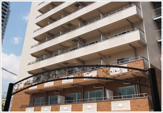

相続・遺言トータルサポート大阪TOP > 事務所紹介
事務所紹介
相続・遺言手続トータルサポート大阪はJR吹田駅東改札より南出口出てすぐの便利な場所にあり、
外観も中もとても綺麗な事務所です。どうぞお気軽に足をお運びください。
- 
お客様のお悩みをお聞かせください
相続・遺言手続トータルサポート大阪は、明るく開放的なスペースとなっており、リラックスしてお悩みをお話いただける環境となっております。
日頃打ち明けにくいお悩みでも、ぜひお聴かせください。スタッフ一同、一つ一つの 問題を解決するために、全力で親身にご相談にのります。
専用の相談ブースをご用意しています
当事務所ではお客様に落ち着いてご相談していただくために専用の相談ブースを設けております。
営業時間外でもご相談を受け付けておりますので、仕事帰りにご相談ご希望の方も御気軽にお申し付けください
事務所概要
| 所在地 | 〒564-0028 大阪府吹田市昭和町1番1号 アイワステーションビル２F |
|---|---|
| 代表者 | 代表特定社員 司法書士 古川悠一郎 （和歌山司法書士会 登録番号第384号） （簡易訴訟代理権 認定番号第1312057号） |
| TEL | 0120-13-7838 |
| FAX | 06-4860-5027 |
| 業務内容 | ・不動産に関する登記 ・商業登記(会社設立等) ・遺言書・公正証書などの書類作成 ・債務整理手続代行 |
| 営業時間 | 月～金 AM9:00～PM6:00 ※営業時間外でもご相談を受け付けておりますので 仕事帰りにご相談ご希望の方も御気軽にお申し付けください。 ※土・日・祝日のご相談も受け付けております。 ※要予約 |
交通・アクセス
公共交通機関でお越しのお客様
[ＪＲ線でお越しの方]
JR吹田駅東改札より南出口出てすぐ
和歌山支店
| 所在地 | 〒640-8342 和歌山県和歌山市友田町4丁目118番 辻本マンション402号 |
|---|---|
| 代表者 | 代表特定社員 司法書士 古川悠一郎 （和歌山司法書士会 登録番号第384号） （簡易訴訟代理権 認定番号第1312057号） |
| TEL | 073-488-1390 |
| FAX | 073-488-1391 |
| 業務内容 | ・不動産に関する登記 ・商業登記(会社設立等) ・遺言書・公正証書などの書類作成 ・債務整理手続代行 |
| 営業時間 | 月～金 AM9:00～PM6:00 ※営業時間外でもご相談を受け付けておりますので 仕事帰りにご相談ご希望の方も御気軽にお申し付けください。 ※土・日・祝日のご相談も受け付けております。 ※要予約 |
交通・アクセス
まずはお気軽にお問い合わせ下さい！